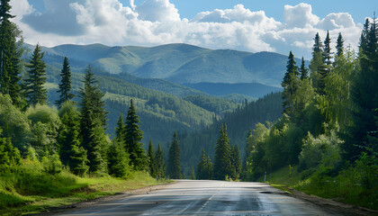
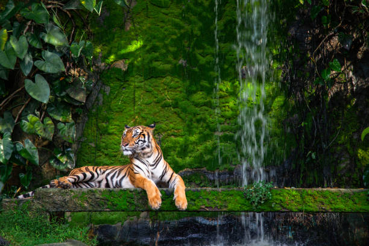
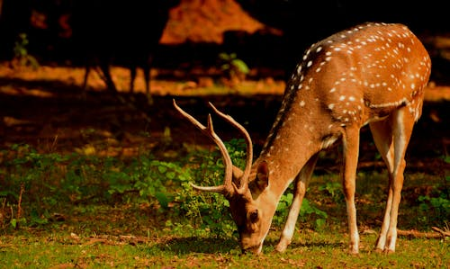
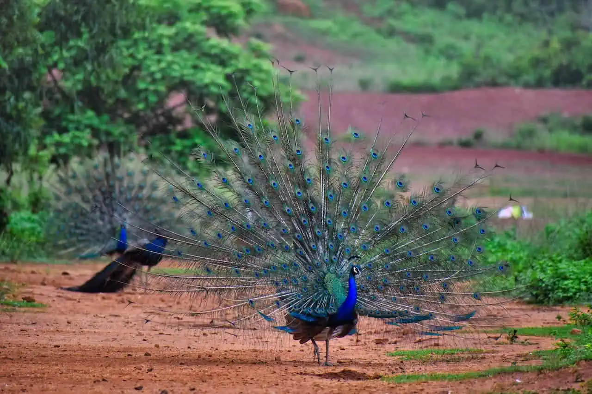
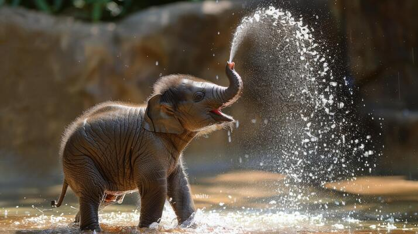
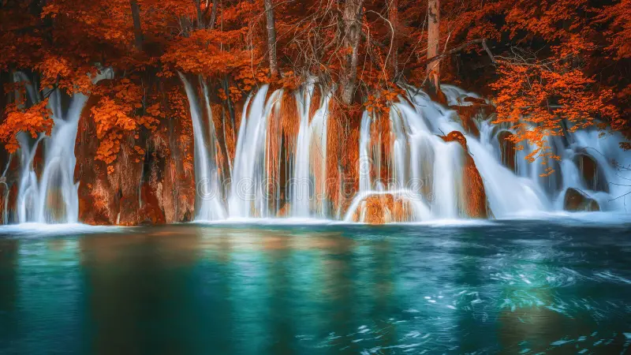
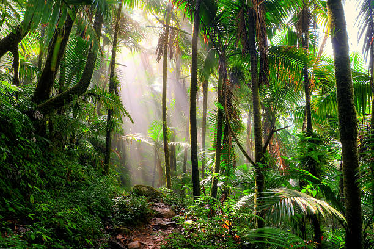

Nature always try to bring HAPPINESS in everyone's life!
About Nature

Mountain
The landform that rises prominently above its surroundings, generally exhibiting steep slopes, a relatively confined summit area, and considerable local relief. Mountains generally are understood to be larger than hills, but the term has no standardized geological meaning. Very rarely do mountains occur individually. In most cases, they are found in elongated ranges or chains.Such terrains have higher elevations than do surrounding areas. Moreover, high relief exists within mountain belts and ranges. Individual mountains, mountain ranges, and mountain belts that have been created by different tectonic processes, however, are often characterized by different features.
Wild Life
Wildlife refers to undomesticated animals and uncultivated plant species which can exist in their natural habitat, but has come to include all organisms that grow or live wild in an area without being introduced by humans.[1] Wildlife was also synonymous to game: those birds and mammals that were hunted for sport. Wildlife can be found in all ecosystems. Deserts, plains, grasslands, woodlands, forests, and other areas including the most developed urban areas, all have distinct forms of wildlife. While the term in popular culture usually refers to animals that are untouched by human factors, most scientists agree that much wildlife is affected by human activities.[2] Some wildlife threaten human safety, health, property and quality of life. However, many wild animals, even the dangerous ones, have value to human beings. This value might be economic, educational, or emotional in nature.




Waterfall
Waterfalls are natural features where water flows vertically over a drop in the landscape, often forming due to erosion of rock layers or geological faults. They can be classified by height, width, water flow, and the shape of the fall itself.Types of Waterfalls: Cataracts: Large, steep waterfalls where water plunges nearly straight down. Cascades: Smaller, less steep waterfalls that often fall over multiple steps. Moulin waterfalls: Water falls through a hole in the rock. Tiered waterfalls: Water falls over multiple levels. Horsetail waterfalls: Water flows over a rock face like a horsetail. Punchbowl waterfalls: Water falls into a wide, bowl-shaped pool. Plunge waterfalls: Water falls directly into a pool at the base. Ledge waterfalls: Water falls over a horizontal ledge.




Forest
A forest is a complex ecological system in which trees are the dominant life-form. A forest is nature's most efficient ecosystem, with a high rate of photosynthesis affecting both plant and animal systems in a series of complex organic relationships.Although the word forest is commonly used, there is no universally recognised precise definition, with more than 800 definitions of forest used around the world.Although a forest is usually defined by the presence of trees, under many definitions an area completely lacking trees may still be considered a forest if it grew trees in the past, will grow trees in the future,or was legally designated as a forest regardless of vegetation type.
Nature Page
Details about Nature
Privacy Policy
Terms of Services
© 2025 Designed & Developed by Shravani Rajvaidya